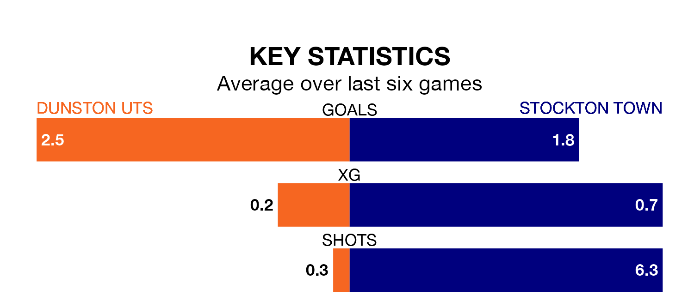

Two of the Northern Premier League Division One East's top sides face each other in Saturday's kick-off, when third-placed Dunston UTS host table-topping Stockton Town.
Dunston UTS have picked up 12 wins and three draws from 18 games so far this season, and sit eight points below the visitors going into the 3pm match.
Stockton, meanwhile, have won 14 and drawn five of 22, picking up 47 points.
With 50 goals in 22 games so far this season, Stockton are the league's highest scorers with 2.3 goals per game. And they are conceding fewer than average, letting in 18 goals at a rate of 0.8 per game.
Dunston UTS are also above average scorers, with 2.0 goals per game, compared to a league average of 1.6. They have conceded 1.0 goal per game.
The hosts are in exceptional form in the Northern Premier League Division One East, with six wins and no losses from their last six games.
With three wins and three draws over that period, Town's form is much worse – they have taken 12 points from 18, compared to Dunston UTS's 18.
In the last five years, Dunston UTS and Stockton have played each other on five occasions. Dunston UTS won two of them, Stockton one, and they drew twice.
On average, Dunston UTS scored 1.2 goals and Stockton 1.4 in those matches.
Their last meeting was on October 21, when they played out a 1-1 draw.
Dunston UTS's last match was on Wednesday, a 3-1 win against Cleethorpes Town.
Stockton drew 0-0 with Liversedge last time out, on January 20.
Updated: 08:51 (UTC), 25/01/24